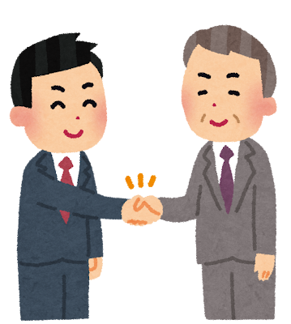

経営理念「感謝・尊敬・愛」
― 大阪市淀川区の税理士・社労士事務所が大切にしている3つの価値観
「感謝」を起点に、「尊敬」と「愛」をもって行動し、
関わるすべての人を幸せへと導く。
森下知幸税理士・社労士事務所（大阪市淀川区西中島）は、税務と労務の両面から経営者様を支える事務所です。 その仕事のすべての土台にあるのが、「感謝」「尊敬」「愛」という3つの言葉からなる経営理念です。 専門知識や制度の運用はもちろん大切ですが、それ以上に、目の前の方とどう向き合うかで結果は変わると考えています。
ここでは、感謝・尊敬・愛それぞれの意味と、税理士・社会保険労務士としての日々の業務でどのように実践しているのかをご紹介します。
感謝GRATITUDE

ご縁と信頼に感謝し、一期一会の出会いを大切にします。
数ある事務所の中からご相談いただけること、そして長くお付き合いいただけること。 そのどれもが当たり前ではありません。感謝はすべての起点であり、 この気持ちを忘れなければ、対応の丁寧さも、レスポンスの速さも、自然とついてくると考えています。
- 初回のご相談から、一期一会の姿勢で丁寧に向き合います
- ご紹介・ご縁でつながったお客様を何よりも大切にします
- 「聞きづらいことを聞ける関係」を、感謝の積み重ねで築きます
尊敬RESPECT

歩んできた歴史と想いに敬意を払い、深く耳を傾けます。
決算書や試算表には、そこに至るまでの経営者様の判断と苦労が詰まっています。 数字の良し悪しだけを指摘するのではなく、その背景にある歴史と想いに尊敬を持って耳を傾けること。 それが、本当に役立つ助言の前提だと考えています。
- まずお話を伺うことから始め、こちらの結論を先に置きません
- これまでの経理・労務のやり方を頭ごなしに否定しません
- 従業員様やご家族を含め、事業に関わるすべての方に敬意を持って接します
愛LOVE
誠意と情熱をもって相手の立場に立ち、最善を尽くします。
税務にも労務にも、正解が一つではない場面があります。 そのとき何を基準に選ぶのか。私たちは、事務所の都合ではなく経営者様にとっての最善を基準にします。 言いにくいことも、必要であれば誠意をもってお伝えする。それが愛のかたちだと考えています。
- 相手の立場に立って、選択肢とリスクを包み隠さずお伝えします
- 短期的な節税だけでなく、事業の継続と成長を見据えて提案します
- 「頼んでよかった」と思っていただけるまでを仕事の範囲と考えます
なぜ「感謝・尊敬・愛」を経営理念に掲げているのか
代表の森下知幸は、公務員として長く社会保険や年金の分野に携わり、「人」を支える制度の裏側を見てきました。 その中で、経営者の方々が労務だけでなく資金繰りや税務にも深く悩んでいる現実に触れ、 「お金と人の両面から経営者を直接支えられる存在になりたい」と考え、一から勉強して税理士資格を取得しました。
制度も数字も、最後に動かすのは人です。だからこそ、専門家としての知識の前に、 人としての姿勢――感謝・尊敬・愛――を事務所の理念として明文化しました。 この3つは、判断に迷ったときに立ち返るための基準でもあります。
理念を日々の業務でどう実践しているか
税務顧問・記帳代行
月々の記帳や申告業務を「作業」で終わらせず、数字の背景を伺いながら進めます。 経営者様が判断に使える形で情報をお返しすることを重視しています。
社会保険・労務手続き
税理士と社会保険労務士の両方の視点を持つ事務所として、税務と労務をまとめてお任せいただけます。 窓口が一つになることで、経営者様の手間とストレスを減らします。
初回相談
初回のご相談は無料です。まずはお話を伺うところから始めます。 契約を急かすことはいたしません。
よくあるご質問
経営理念の「感謝」とはどのような意味ですか？
ご縁と信頼に感謝し、一期一会の出会いを大切にするという意味です。ご相談いただけること自体が当たり前ではないという姿勢を、日々の業務の出発点にしています。
経営理念の「尊敬」とはどのような意味ですか？
歩んできた歴史と想いに敬意を払い、深く耳を傾けるという意味です。数字の良し悪しだけで判断せず、経営者様がこれまで積み重ねてこられた背景を理解することを大切にしています。
経営理念の「愛」とはどのような意味ですか？
誠意と情熱をもって相手の立場に立ち、最善を尽くすという意味です。税務・労務の判断において、事務所の都合ではなく経営者様にとっての最善を基準にします。
理念に共感したのですが、初回相談は有料ですか？
初回相談は無料です。お電話またはメールでお気軽にお問い合わせください。
「感謝・尊敬・愛」を大切にする事務所として、
経営者様のご相談をお待ちしています。
初回相談は無料です
無料相談のお問い合わせ